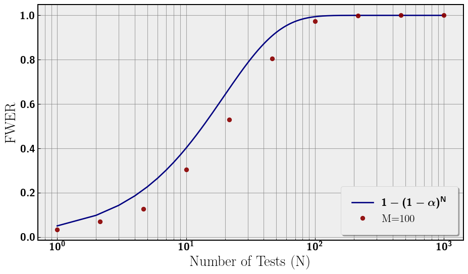
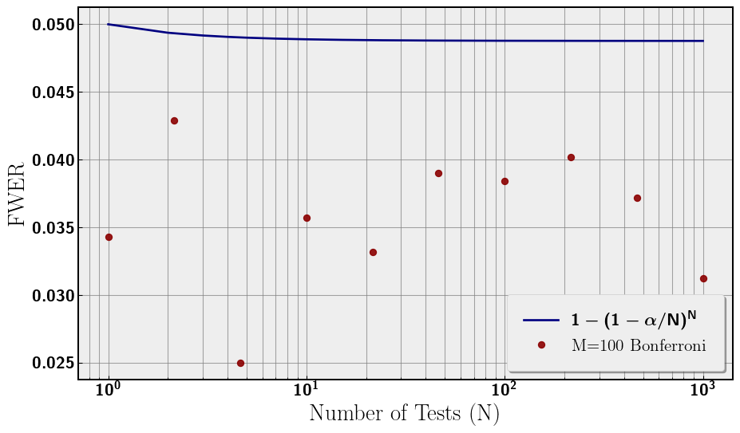
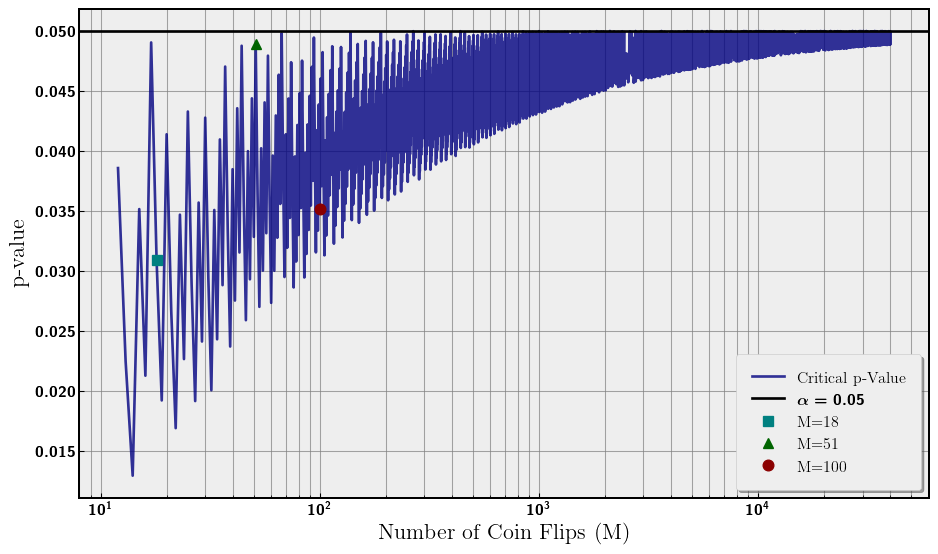

Multiple Testing
Evan Frangipane
Abstract
In this article I will describe the multiple testing problem, simulate a simple example, and outline a solution called the Bonferroni correction.
What is the Multiple Testing Problem?
The main idea of the multiple testing problem is the more statistical tests we perform during an analysis, the higher our false positive rate (Type I Error). Imagine we choose our confidence level to be 95%, essentially we are choosing our false positive rate to be 5% for one test. If we test again, the probability of at least one false positive is 1 − (0.95 ⋅ 0.95) = .0975 > 0.05 (one minus the probability of no false positives).
If we continue testing until N, we can rewrite the probablity (at least one false positive) as 1 − (1 − 0.05)N. This probability is called the family-wise error rate (FWER). As N increases, the FWER increases to probability of 1. If we allow this problem to get out of hand, we could be making false inferences.
Outlining the Simulation
For our simulation we will be flipping fair coins. We are doing a two-tailed test to see if the number of heads is significantly different from the number of tails. Some parameters:
- M - number of coins being flipped in each test
- α = 0.05 - significance for each test
- N - number of tests performed
- n = 10000 - number of repetitions of each analysis
So, the total number of coins flipped in each analysis is M ⋅ N ⋅ n. We choose M = 100, and N ∈ [1, 1000] for the following plots.
import numpy as np
import matplotlib.pyplot as plt
import random
from scipy.stats import binom
from matplotlib import rcParams
import pickle
plt.rc('text', usetex=True)
plt.rc('axes', linewidth=2)
rcParams['font.family'] = 'serif'
plt.rc('font', weight='bold')
plt.rcParams['text.latex.preamble'] = r'\usepackage{sfmath} \boldmath'
#rcParams['font.serif'] = ['Times New Roman']
rcParams['font.size'] = 14
rcParams['axes.titlesize'] = 16
rcParams['axes.labelsize'] = 14
rcParams['legend.fontsize'] = 12
rcParams['xtick.labelsize'] = 12
rcParams['ytick.labelsize'] = 12
plt.style.use('bmh')
# let's setup some constants
random.seed(42)
P = 0.5
ALPHA = 0.05
M = 100
n = 10000
def asymp(N_, n_, M_, alpha_): # asnymptotic false positive simulation
results = np.random.randint(0, 2, size=(n_, N_, M_))
evens = np.sum(results % 2 == 0, axis=2)
temp_binomial = binom(M_,P)
temp_crit = int(temp_binomial.ppf(alpha_ / 2)-1.)
false_positives = np.sum((evens <= temp_crit) | (evens >= M_ - temp_crit),\
axis=1) > 0
return np.mean(false_positives)
# run three samples with low, med, and high M coin flip
fwer_N = np.logspace(0,3,10)
fwer_numer = [asymp(int(i), n, M, ALPHA) for i in fwer_N]
# analytic FWER
fwer_bound_N = np.linspace(1, 1000, 1000)
fwer_bound = 1 - (1 - ALPHA)**fwer_bound_NWe plot the results of our analysis in Figure 1. The false positive rate (FWER) increases toward 1 with N. The choice of M = 100 is plotted along with the analytical curve. There is a discrepancy between the analytical curve and the numerical simulations that tends to zero at large N. We will return to subtlety later in this note. For now, the relevant feature is the monotonic increase in Type I Error, the false positive probability with the number of tests.
fig, ax = plt.subplots(figsize=(10, 6))
ax.plot(fwer_bound_N, fwer_bound, label=r'$1 - (1 - \alpha)^N$', color='navy')
ax.plot(fwer_N, fwer_numer, 'o',label=f'M={M}', \
color='darkred', markersize=6, alpha=0.9)
ax.set_xlabel('Number of Tests (N)')
ax.set_ylabel('FWER')
ax.set_xscale('log')
ax.legend(loc='lower right', frameon=True, shadow=True, borderpad=1)
ax.grid(which='both', linestyle='-', linewidth=0.8, color='gray', alpha=0.7)
#plt.title('Family-Wise Error Rate vs. Number of Tests')
for spine in ax.spines.values():
spine.set_edgecolor('black')
spine.set_linewidth(1.5)
plt.tight_layout()
plt.show()
Correcting Significance
A simple solution to this problem is to scale our choice of α for each test by the number of tests. The simplest correction is the Bonferroni correction, which is simply α → α/N. This comes from taking the Taylor Expansion of the FWER equation with small parameter α.
1 − (1 − α)N → 1 − (1 − N ⋅ α + 𝒪(α2)) = N ⋅ α + 𝒪(α2)
Given this expansion, a natural redefinition of α is α = α/N such that the first term in the expansion is 0.05, while the significance per test is scaled down by N. This redefinition bounds the FWER to 0.05 rather than asymptoting to 1. Now the entire analysis has a significance of 0.05, which is what we desired by choosing α = 0.05. Now, we redo the analysis with our new significance to confirm that FWER is around 0.05. This can be seen in Figure 2.
# three samples with bonferroni
fwer_bon = [asymp(int(i), n, M, ALPHA/i) for i in fwer_N]
# fwer with adjusted alpha = alpha/N
fwer_bound_bon = 1 - (1 - ALPHA/fwer_bound_N)**fwer_bound_N
fig, ax = plt.subplots(figsize=(10, 6))
ax.plot(fwer_bound_N, fwer_bound_bon, label=r'$1 - (1 - \alpha/N)^N$', \
color='navy', linewidth=2)
ax.plot(fwer_N, fwer_bon, 'o', label=f'M={M} Bonferroni', \
color='darkred', markersize=6, alpha=0.9)
ax.set_xlabel('Number of Tests (N)')
ax.set_ylabel('FWER')
ax.set_xscale('log')
ax.legend(loc='lower left', frameon=True, shadow=True, borderpad=1)
ax.grid(which='both', linestyle='-', linewidth=0.8, color='gray', alpha=0.7)
for spine in ax.spines.values():
spine.set_edgecolor('black')
spine.set_linewidth(1.5)
plt.tight_layout()
plt.show()
Subtle Discrepancy in Numerical FWER
Our α significance was chosen to be 0.05 for this analysis. However, when we are dealing with coin flips we are using discrete data and not continuous. This has consequences for what constitutes a significant result for flipping M coins. For a significant result we need the p-value of the number of heads (or tails hence two-tail test) to be the largest number less than α = 0.05. We call this number of heads the critical number of heads. However, due to our discrete data, the critical p-value can vary greatly rather than being exactly 0.05. One would expect that as the number of coin flips increases, the critical p-value should approach 0.05. The intuition being as we increase the number of coins flipped we are filling in the discrete data set and approaching continuum. We plot the critical p-value for increasing M coin flips in Figure 3. Additionally, we also overlay the critical p-values for M = {18, 51, 100}. The closer the critical p-value is to 0.05, the closer the FWER is to 1 − (1 − α)N.
# calculate critical p-vals and overly M = {18, 51, 100}
MLOW = 18
MMED = 51
Ms = np.logspace(np.log(3),np.log(100),10000).astype(int)
bins = [binom(i,P) for i in Ms]
crits = [int(i.ppf(0.05 / 2)-1.) for i in bins]
pvs = [2.*bins[i].cdf(min(Ms[i]-crits[i],crits[i])) for i in range(len(Ms))]
index = [min(range(len(Ms)), key=lambda i: abs(Ms[i]-MLOW)),
min(range(len(Ms)), key=lambda i: abs(Ms[i]-MMED)),
min(range(len(Ms)), key=lambda i: abs(Ms[i]-M))
]
labels = [f'M={MLOW}', f'M={MMED}', f'M={M}']
fig, ax = plt.subplots(figsize=(10, 6))
ax.plot(Ms, pvs, color='navy', label='Critical p-Value', alpha=0.8)
ax.axhline(0.05, color='black', label=f'$\\alpha = 0.05$')
plt.plot([Ms[index[0]]], [pvs[index[0]]], 's', label=labels[0], \
color='teal', markersize=8, zorder=2)
plt.plot([Ms[index[1]]], [pvs[index[1]]], '^', label=labels[1], \
color='darkgreen', markersize=8, zorder=2)
plt.plot([Ms[index[2]]], [pvs[index[2]]], 'o', label=labels[2], \
color='darkred', markersize=8, zorder=2)
ax.set_xscale('log')
ax.set_xlabel('Number of Coin Flips (M)')
ax.set_ylabel('p-value')
#plt.title('p-value of Critical Integer $(p_{\\text{crit}}< \\alpha)$')
ax.legend(loc='lower right', frameon=True, shadow=True, borderpad=1)
ax.grid(which='both', linestyle='-', linewidth=0.8, color='gray', alpha=0.7)
for spine in ax.spines.values():
spine.set_edgecolor('black')
spine.set_linewidth(1.5)
plt.tight_layout()
plt.show()